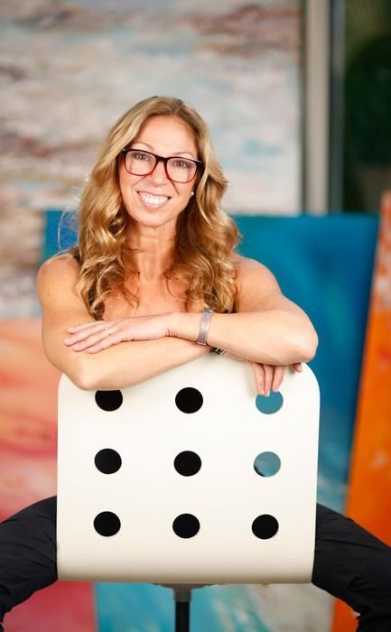
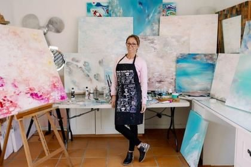

Abstract painting · Lane Cove, Sydney
Landscapes and seascapes, built in translucent layers.


The artist
Between the grey concrete of a Hungarian winter and the explosive blue of an Australian sky.
“Explore your own imagination. I've already given you mine.”
Born in Budapest and now painting from a studio in Lane Cove, Ritushka builds large abstract landscapes and seascapes in translucent layers, drawing on the Australian coastline, light and weather.
She does not paint what she sees. She paints what remained after everything else was stripped away. She does not want you to understand her paintings; she wants you to fall into them. Every acrylic pour, every layered scrape, every sudden rupture of colour is an invitation, an open door, a dare.
- 300+works completed
- 3continents of collectors
- 100%hand-painted originals, signed, with certificate
The Wall
Original acrylic on canvas, hand-painted, signed, with certificate of authenticity. Prices in AUD, framed in a floating oak frame, excluding insured shipping. Colours may vary slightly between screen and the physical work.
Limited edition prints
Take a Ritushka home.
Fixed, numbered editions of the paintings: archival pigment giclée on cotton rag paper, hand-signed and numbered, with a certificate of authenticity. Three sizes, each its own fixed edition. From AUD $100, unframed, delivered worldwide.
Commissions
An original made for your space.
Your size, your palette, your scale. Every commission can also be custom framed to suit the room it's going into. Commissions for collectors, designers, corporates, hotels and hospitality.
- 1
Brief
Share your space, size, palette and timeline. The studio replies within two business days.
- 2
Proposal
Receive a concept, dimensions and quote, with a 50% deposit to begin.
- 3
Creation
Your painting is created over four to eight weeks, with progress images.
- 4
Delivery
Final approval, balance, then insured worldwide delivery with a certificate of authenticity.
Custom framing
The floating oak frame shown on each work is the standard choice, not a limit. Any original can be framed in a different timber, tone or profile through specialist Sydney framers, quoted before anything is ordered.
Shipping & installation
Worldwide, fully insured, with tracking. Free local delivery on originals over A$1,000 within roughly 50 km of the Lane Cove studio. Hanging, levelling and lighting available at extra cost.
For the trade
Programs for interior designers, art consultants, buyer's agents and corporate clients: trade pricing, reserved previews, custom sizes and white-glove delivery.
“Explore your own imagination.”
Visit the paintings in person at NITA Gallery, 68 Campbell Street, Surry Hills.
studio@ritushka.art · Instagram @ritushka.art · ritushka.com
Enquiries answered within two business days · Prices in Australian dollars